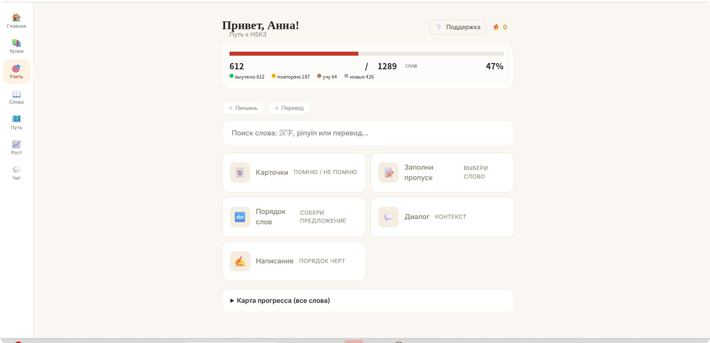

Китайский язык для малышей и дошкольников — с нуля через игру
Песни, китайские мультфильмы для малышей, ролевые игры и иероглифы-картинки. Ставим произношение на слух с носителем — ребёнок учится с удовольствием. Онлайн и очно в Москве.

Лучший возраст, чтобы начать — сейчас
Китайский для дошкольников — это не про «выучить язык к школе». Это гибкий слух, развитие памяти и внимания, а главное — любовь к языку, которая останется на годы.
Лучший возраст для языка
Слух малыша гибкий: тоны и произношение усваиваются естественно, почти как родная речь. С нуля сейчас — без языкового барьера потом.
Развивает память и речь
Иероглифы-картинки, песни и игры тренируют память, внимание и мелкую моторику — полезно перед школой.
Учим через игру и мультфильмы
Никакой зубрёжки: китайские мультфильмы для малышей, песенки и ролевые игры — ребёнок учится с удовольствием.
Фора к школе
К первому классу у дошкольника уже есть первые слова, тоны и любовь к языку — отличная база на годы вперёд.
Своя программа для каждого возраста
От первого знакомства со звучанием языка до подготовки к школе. Выберите возраст малыша и посмотрите, как устроено обучение.
Учим через игру, песни и китайские мультфильмы
Малыши не учат язык — они в нём играют. Это уникальный подход: китайские мультфильмы для малышей, песенки и ролевые сценки приучают слух к тонам незаметно, а иероглифы-картинки превращают занятие в игру.
Мультфильмы для малышей
Подобранные по возрасту китайские мультфильмы — ребёнок привыкает к звучанию и интонациям языка незаметно для себя.
Песни и игры
Песенки, пальчиковые и ролевые игры: язык запоминается через ритм и движение, а не через повторение за партой.
Иероглифы-картинки
Иероглифы подаём как образы и рисунки — малыш «читает» картинку и запоминает слово легко и с интересом.
Речь с носителем
Произношение и тоны ставит носитель языка — короткие диалоги и сценки снимают барьер с первых занятий.

Конкретный результат по срокам
Занятия проходят два раза в неделю — в группе или индивидуально; обучение происходит в игровой форме, и вот какого результата ребёнок успешно достигает.
Понимает простые команды и слова, поёт китайские песенки, узнаёт первые иероглифы-картинки и считает.
СтартЗнает 50–150 слов, называет цвета и животных, повторяет короткие фразы за носителем без стеснения.
YCT pre-1Рассказывает о себе простыми фразами, читает пиньинь, узнаёт 100+ иероглифов — готов к YCT 1 и к школе.
YCT 1Подберём формат под ваш ритм
Три формата обучения для малышей и дошкольников. Первое занятие — бесплатный знакомство-урок; доступны налоговый вычет 13% и оплата от юридического лица.
Индивидуально
В мини-группе
Гибридный формат
Реальные истории, а не общие слова
Сын в 4 года сам бежит на урок — там песни, мультики и игры. Уже понимает простые фразы и считает по-китайски.
Дочка-дошкольница занимается с удовольствием, преподаватель находит подход к малышам. Произношение — как у носителя.
Не только китайский — другие языки и направления
Kitai School — образовательная школа, где можно изучать не только китайский. Для всей семьи подберём курс под цель: для дошкольников, школьников и взрослых.
Другие иностранные языки
Английский, немецкий, французский и испанский, а также русский как иностранный — для школьников и взрослых.
Детский клуб и сад
Детский разговорный клуб и языковой детский сад с погружением в среду — игры, песни и общение со сверстниками.
Подготовка к экзаменам
Сертификаты международных экзаменов YCT и HSK: готовим ученики к экзаменам и помогаем уверенно их пройти.
Вопросы и ответы
Ответы на ваши вопросы
Самое важное о том, как малыши и дошкольники учат китайский: формат, возраст, мультфильмы и стоимость.
Не нашли свой вопрос?
Напишите нашему менеджеру в Telegram — ответим в течение 15 минут в рабочее время.
Написать в Telegram →С какого возраста можно начинать китайский с малышом?
Берём малышей с 3 лет, с нуля — опыт не нужен. В этом возрасте слух самый гибкий, поэтому произношение и тоны усваиваются естественно. Для самых маленьких уроки идут вместе с родителем и длятся 25–30 минут, чтобы ребёнок не уставал.
Как проходят занятия с малышами и дошкольниками?
Только через игру: песни, китайские мультфильмы для малышей, ролевые сценки, пальчиковые игры и иероглифы-картинки. Малыш не «учит» язык, а играет в него — поэтому занимается с удовольствием и сам просит ещё урок. Никакого письма и зубрёжки в раннем возрасте нет.
Используете ли вы китайские мультфильмы для малышей?
Да, это часть методики. На уроках и на учебной платформе мы используем подобранные по возрасту китайские мультфильмы для малышей и песенки. Между занятиями ребёнок может смотреть их дома — так язык звучит каждый день, и слух привыкает к тонам незаметно для малыша.
Можно ли заниматься онлайн с таким маленьким ребёнком?
Да. Уроки для малышей проходят в Zoom, родитель рядом и всё видит. Занятия короткие и динамичные, чтобы удержать внимание дошкольника. Все материалы, песни и мультфильмы доступны в личном кабинете в любое время. Очный формат доступен в Москве.
Малыш ещё не читает и не пишет — это не помешает?
Совсем нет. Для малышей и дошкольников всё строится на слух и через игру: ребёнок слушает, повторяет, поёт и играет. Иероглифы даём как картинки-образы. Письмо и чтение пиньинь подключаем мягко и только ближе к школе, в группе 6–7 лет.
Сколько длится урок и как часто заниматься?
Урок для малышей — 25–40 минут в зависимости от возраста, чтобы ребёнок не перегружался. Оптимально 1–2 занятия в неделю плюс короткие игры и мультфильмы дома. Такой ритм формирует привычку и даёт устойчивый результат без усталости.
Сколько стоит и есть ли бесплатный пробный урок?
Индивидуально для малышей — от 1 900 ₽ за урок, мини-группа 2–4 ребёнка — 2 200 ₽ за урок с человека. Есть гибридный формат с платформой и мультфильмами — от 12 000 ₽ за 3 месяца. Первое знакомство-занятие бесплатное; доступны налоговый вычет 13% и оплата от юридического лица.
Где проходят занятия — онлайн или в Москве?
И так, и так. Китайский для малышей в Москве доступен очно, а онлайн-формат — для всей России. Программа, материалы и мультфильмы одинаковые, поэтому вы выбираете по удобству. На пробном уроке поможем определиться с форматом.
Зачем дошкольнику китайский с нуля?
Раннее изучение китайского языка для дошкольников тренирует память, внимание и слух, развивает речь и мелкую моторику через иероглифы. Малыш получает гибкое произношение и любовь к языку, а к школе у него уже есть фора: первые слова, песни и понимание простых фраз.
Кто ведёт занятия с малышами?
Занятия ведут преподаватели с педагогическим образованием и опытом работы с дошкольниками — они умеют удерживать внимание малыша и превращать урок в игру. Произношение и тоны помогает ставить носитель языка. Все материалы и мультфильмы подобраны по возрасту.
Чем китайский полезен для развития и будущего ребёнка?
Заниматься китайским будет увлекательным занятием — и это отличный способ развить мышление и логику: язык открывает доступ к новой культуре, расширяет кругозор и знания о мире. Ребёнку не нужно долго ждать — первые признаки успеха видны очень быстро, и многие сами говорят «хочу ещё урок». Перевод простых фраз, песни и игры делают процесс лёгким; даже то, что кажется сложно, осваивается в игровой форме — это шаг к языкам будущего.
Как устроен процесс обучения и сопровождение?
Учеба строится по уникальной программе: учитель ведёт ребёнка и следит за прогрессом, ученики выполняют задания и помогают друг друга мотивировать в группе. Мы максимально вовлекаем ребёнка, специально подбираем темы под его интересы и в качестве поддержки даём дополнительные материалы, видео и основные правила. Занятие проводится в комфортном темпе — это позволяет освоить новые слова без особых усилий и эффективного результата добиться успешно. Открытые уроки проводим регулярно; следующая ступень — подготовка к экзаменам. Оставляя заявку, вы подтверждаете согласие на обработку данных: если согласен с условиями публичной оферты, просто оставьте контакты, и мы расскажем подробнее. Сведения об образовательной организации опубликованы; права учеников защищены. Спасибо, что выбираете изучать языки с нами — получите бесплатный урок и сможете узнать больше.
Китайский язык для малышей и дошкольников с нуля — онлайн и очно в Москве. Игровой курс для эффективного освоения базового уровня: песни, китайские мультфильмы для малышей, видео и игровые задания. Регулярная обратная связь и понятный прогресс — вы получите всю информацию об учёбе, а игровой формат помогает заинтересовать ребёнка, свободно и уверенно заговорить и сделать первый шаг к языкам будущего. Наши ученики получают багаж знаний о культуре народов мира, могут пройти международные экзамены YCT и HSK и получить сертификаты, которые ценят при поступлении, включая высшее образование в Китае. Хотите узнать условия — оставьте заявку именно у нас. Сведения об образовательной организации и лицензия Департамента образования г. Москвы опубликованы на сайте.
Запишите малыша на бесплатный урок
За 30–40 минут познакомим ребёнка с языком через игру и мультфильмы, определим уровень и подберём программу. Без обязательств.